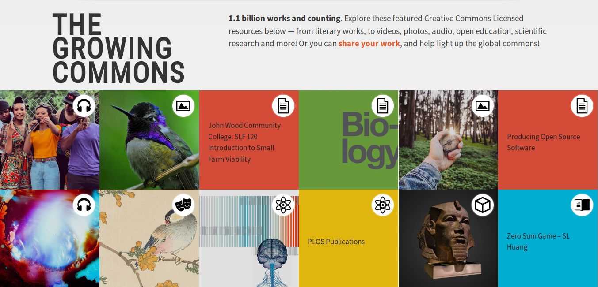
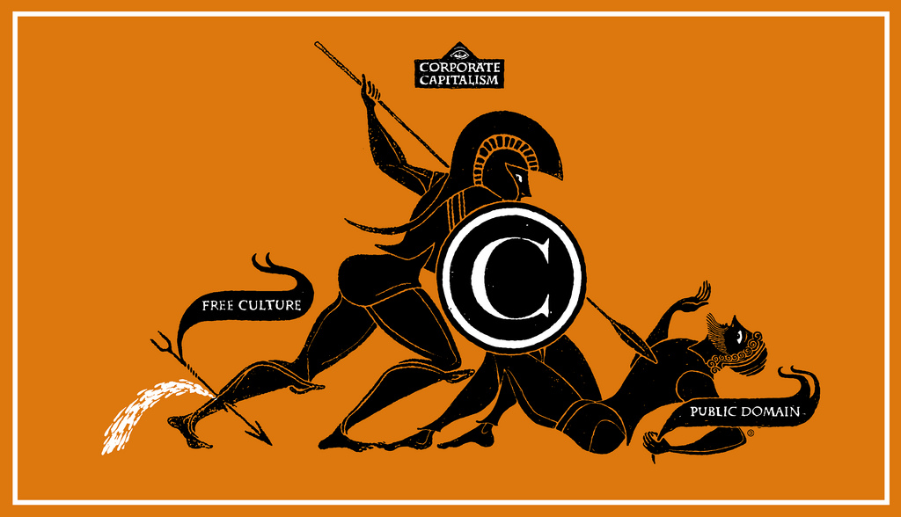
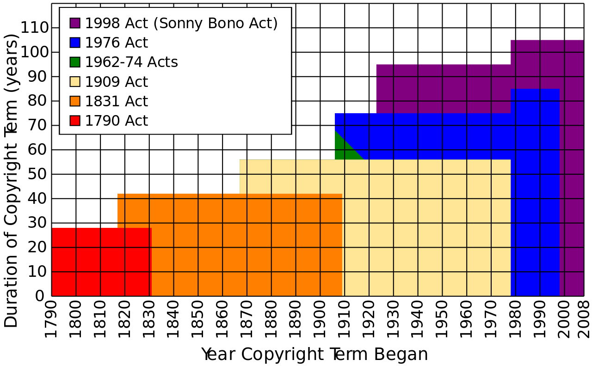
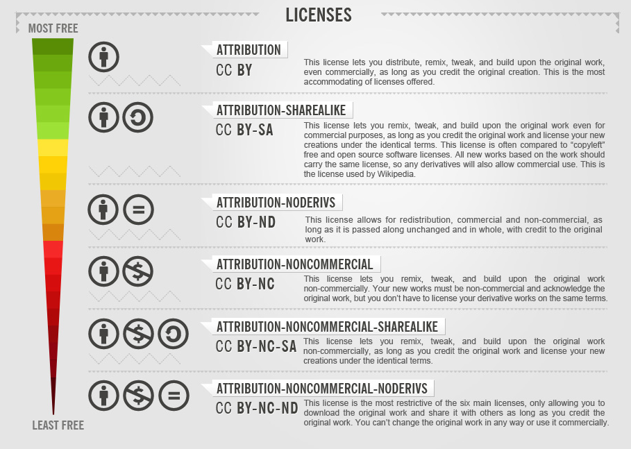

Creative Commons
Una organización y movimiento por la cultura libre
Captura de pantalla de la portada del sitio web oficial de Creative Commons (CC BY 4.0)
¡Breve explicación para niños!
¿Por qué Creative Commons?
Las tecnologías digitales están en una constante tensión con legislaciones de derechos de autor. Mientras Internet y otras nuevas tecnologías facilitan los modos para compartir, reutilizar y mezclar obras creativas, las legislaciones de derechos de autores lo restringen.
Sonny Bono Copyright Term Extension Act
The battle for the extension of Public Domain, por Christopher Dombrus (CC BY-SA 4.0) in Wikimedia Commons
{kind=link}
Sonny Bono Copyright Term Extension Act
CTEA es el acrónimo usado para referise a este acta, en la que el gobierno de los Estados Unidos añade 20 años más al términos de los derechos de autor, es decir, 70 años
Dato interesante
Este acta es frecuentemente llamada Mickey Mouse Copyright Law, debido a que Disney Corp. es un defensor del endurecimiento del término de los derechos de autor.Eldred vs Ahscroft
El profesor Lawrence Lessing de la Stanford Law School considero este acta como inconstitucional. Representó a Eric Eldred, un editor web de trabajos en dominio público. Desafiaron este acta en la Corte Suprema de los Estados Unidos, porque violaba su propia constitución.
Tom Bell's graph, vectiruzadi por Clorox (CC BY-SA 3.0), en Wikimedia Commons
{kind=link}
Perdieron el caso
Pero luego, ellos y Hal Abeson fundaron Creative Commons en 2001, una organización sin ánimo de lucro con el objetivo de permitir a los creadores compartir sus obras creativas en términos más flexibles que los derechos de autor.
Creative Commons trademark logo (PD), en Wikimedia Commons
{kind=link}
Conjunto de licencias
En 2002, Creative Commons publicó el primer conjunto de licencias libres y públicas. Actualmente está compuesto por licencias en una escala de libertad.
Freedom scale (without CC0) por Foter (CC BY-SA 3.0) en Wikimedia Commons
{kind=link}
Organización
CC es una organización sin ánimo de lucro con un equipo distribuido en todo el mundo. En 2016 la organización una nueva estrategia basada en dos claves:
- La máquina, compuesta por las herramientas legales diseñadas y administradas por CC.
- Apoyo al movimiento. CC ayuda al movimiento abierto, formando y empoderando promotores, y trabajando directamente con la comunidad.
Captura de pantalla de la Team página "Team" del sitio web oficial de Creative Commons (CC BY 4.0).
Movimiento y Red Global CC
Movimiento y Red Global CC
Con el paso de los años, se ha formado a muchas y diversas personas en las licencias abiertas Creative Commons. No es necesario estar formalmente conectado para ser parte del movimiento, porque cualquier puede ser promotor de la cultura abierta, creando o compartiendo./p>
Además, hay un grupo formal, la Red Global CC, en el que hay áreas de trabajo organizadas que se llaman "Network Platforms". Cualquiera puede participar en ellas. Este grupo formal es solo una pieza entre muchas: wikimedistas, mozilianos y promotores del código y del acceso abierto entre otros grupos.
Las licencias libres son una necesidad global con un movimiento global en el que cualquier puede colaborar, como creador o usuario del contenido.
Presentación realizada por Iván Hernández Cazorla (Coruja Digital) con reveal.js (framework JavaScript desarrollado por Hakim El Hattab).

Presentación disponible en Coruja Digital